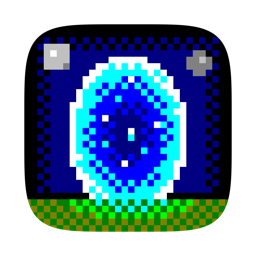

Privacy Policy
Last updated 2026-09-10
Moongate Client ("the app") is a game client for Ultima Online–compatible servers ("shards") published by Edward Pleydell-Bouverie.
What the app collects
Nothing. The app has no analytics, no telemetry, no advertising, no crash reporting service and no account system of its own. It contacts no server operated by the developer.
What the app stores on your Mac
- Server profiles (host, port, account name) and your settings, macros and window layouts, in the app's own sandbox container.
- Account passwords, only if you choose "Save password", in the macOS Keychain. With "Sync with iCloud Keychain" on, Apple's iCloud Keychain carries them to your other Macs under Apple's terms.
- Game data files you download or choose (the Ultima Online client files), in the folder you pick or in the app's iCloud Drive container.
- Journal logs, if you turn on "Save journal to file".
- Scripts you write or import, and their settings.
You can delete all of it by removing the app and its container folder, or individual items from within the app.
Where your data goes
- The shard you connect to. Your account name, password and everything you do or say in the game are sent to that server over the game's own protocol. Shards are run by third parties under their own terms; Moongate Client is not affiliated with any of them, nor with Electronic Arts or Broadsword Online Games.
- The download link you enter, only when you use "Download Files": the app reads the file manifest behind the link you paste (for example the publisher's client-download page) and fetches the game files from the servers that manifest names. No account data is sent, and nothing is contacted until you have entered a link. The link is stored in the app's settings so the "newer release" check on the login page can use it.
- GitHub, only when you open the public script browser: the app lists and downloads scripts from the PlayTazUO/PublicLegionScripts repository.
- Apple iCloud, only if you enable profile sync or store game files in iCloud Drive, under Apple's privacy terms.
Children
The app is rated for teenagers and adults. Online play involves unmoderated chat with other players; the app provides an ignore list and a "Hide public chat" option, and abuse on a shard should be reported to that shard's operators.
Contact
Questions and reports: https://github.com/edbouverie/moongate-site/issues (also reachable from the app's Help menu → Report a Problem).